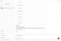
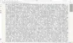

Journal · 2026-03-24
微信聊天记录
吉姆哈克 : 老哥在吗？ 2026年3月24日 11:28
吉姆哈克 : You around, bro? 2026年3月24日 11:28
吉姆哈克 : T'es là, mon pote ? 2026年3月24日 11:28
吉姆哈克 : Bist du da, Kumpel? 2026年3月24日 11:28

吉姆哈克 : 这是我请龙虾帮我将音频上传到一个工具网站，操作“音频转文字”的结果 2026年3月24日 11:29
吉姆哈克 : This is the result of asking the lobster to upload an audio clip to a tool site and run "audio to text" 2026年3月24日 11:29
吉姆哈克 : Voici le résultat quand je demande au homard de téléverser un audio sur un site outil et de lancer « audio vers texte » 2026年3月24日 11:29
吉姆哈克 : Das ist das Ergebnis, als ich den Hummer gebeten habe, eine Audiodatei auf eine Tool-Website hochzuladen und „Audio zu Text“ auszuführen 2026年3月24日 11:29

吉姆哈克 : 这是提取好了的文案，但有9905个字 2026年3月24日 11:30 吉姆哈克 : 我想请他帮我“合理分段”“纠正错别字” 2026年3月24日 11:30 吉姆哈克 : 但之前遇到这个任务，他总是断断续续、偷工减料、丢掉了好多文本 2026年3月24日 11:31 吉姆哈克 : 所以，这应该用什么技能呢？ 引用：我想请他帮我“合理分段”“纠正错别字” 2026年3月24日 11:31 吉姆哈克 : 1. 先学习技能https://clawhub.ai/ivangdavila/chinese和https://clawhub.ai/dizhu/chinese-copywriting-guidelines 2.学习后，将我本地的笔记文件，C:\Users\NewtN\Downloads\【伯爵】丐版法西斯？莫迪背后的印度国民志愿服务团是什么来头？.md合理分段、纠正错别字 3.不要废话 直接给我结果生成在同目录下 文件名字 叫【伯爵】丐版法西斯？莫迪背后的印度国民志愿服务团是什么来头？分段纠错.md 4.遇到登录选项，你只要等待即可，我来帮你登录！ 2026年3月24日 11:46 吉姆哈克 : 想要小龙虾学习技能，复制粘贴技能链接就行了吗？不需要下载吗？ 2026年3月24日 11:46 龙悦科技小马哥 : 你让他帮你全网搜技能 2026年3月24日 11:48
吉姆哈克 : This is the extracted transcript, but it's 9905 characters 2026年3月24日 11:30 吉姆哈克 : I want to ask it to "sensibly segment it" and "correct typos" 2026年3月24日 11:30 吉姆哈克 : But every time it hit this task before, it kept stuttering, cutting corners and dropping big chunks of text 2026年3月24日 11:31 吉姆哈克 : So which skill should I use for this? Quote: I want to ask it to "sensibly segment it" and "correct typos" 2026年3月24日 11:31 吉姆哈克 : 1. First study the skills https://clawhub.ai/ivangdavila/chinese and https://clawhub.ai/dizhu/chinese-copywriting-guidelines 2. After studying, take my local note file C:\Users\NewtN\Downloads\【伯爵】丐版法西斯？莫迪背后的印度国民志愿服务团是什么来头？.md and sensibly segment it and correct typos 3. No fluff, just give me the result generated in the same directory, filename 【伯爵】丐版法西斯？莫迪背后的印度国民志愿服务团是什么来头？分段纠错.md 4. When you hit a login option, just wait, I'll log in for you! 2026年3月24日 11:46 吉姆哈克 : To make the little lobster learn a skill, is copy-pasting the skill link enough? No download needed? 2026年3月24日 11:46 龙悦科技小马哥 : Have it search the whole web for skills for you 2026年3月24日 11:48
吉姆哈克 : C'est la transcription extraite, mais elle fait 9905 caractères 2026年3月24日 11:30 吉姆哈克 : Je veux lui demander de « la segmenter judicieusement » et de « corriger les fautes » 2026年3月24日 11:30 吉姆哈克 : Mais avant, face à cette tâche, il n'arrêtait pas de couper, de rogner sur la qualité et de perdre plein de texte 2026年3月24日 11:31 吉姆哈克 : Du coup, quelle compétence utiliser ? Citation : Je veux lui demander de « la segmenter judicieusement » et de « corriger les fautes » 2026年3月24日 11:31 吉姆哈克 : 1. Étudie d'abord les compétences https://clawhub.ai/ivangdavila/chinese et https://clawhub.ai/dizhu/chinese-copywriting-guidelines 2. Après étude, prends mon fichier de notes local C:\Users\NewtN\Downloads\【伯爵】丐版法西斯？莫迪背后的印度国民志愿服务团是什么来头？.md, segmente-le judicieusement et corrige les fautes 3. Pas de blabla, donne-moi directement le résultat généré dans le même dossier, nom de fichier 【伯爵】丐版法西斯？莫迪背后的印度国民志愿服务团是什么来头？分段纠错.md 4. Quand une option de connexion apparaît, attends simplement, je me charge de me connecter ! 2026年3月24日 11:46 吉姆哈克 : Pour que le petit homard apprenne une compétence, il suffit de copier-coller le lien ? Pas besoin de télécharger ? 2026年3月24日 11:46 龙悦科技小马哥 : Fais-lui chercher des compétences sur tout le web 2026年3月24日 11:48
吉姆哈克 : Das ist das fertige Transkript, aber es hat 9905 Zeichen 2026年3月24日 11:30 吉姆哈克 : Ich möchte ihn bitten, es „sinnvoll zu gliedern“ und „Tippfehler zu korrigieren“ 2026年3月24日 11:30 吉姆哈克 : Aber früher bei dieser Aufgabe hat er immer wieder abgehackt, gepfuscht und massig Text verloren 2026年3月24日 11:31 吉姆哈克 : Welchen Skill sollte ich also nehmen? Zitat: Ich möchte ihn bitten, es „sinnvoll zu gliedern“ und „Tippfehler zu korrigieren“ 2026年3月24日 11:31 吉姆哈克 : 1. Lerne zuerst die Skills https://clawhub.ai/ivangdavila/chinese und https://clawhub.ai/dizhu/chinese-copywriting-guidelines 2. Nach dem Lernen nimm meine lokale Notizdatei C:\Users\NewtN\Downloads\【伯爵】丐版法西斯？莫迪背后的印度国民志愿服务团是什么来头？.md und gliedere sie sinnvoll und korrigiere Tippfehler 3. Kein Geschwafel, gib mir das Ergebnis direkt im selben Ordner generiert, Dateiname 【伯爵】丐版法西斯？莫迪背后的印度国民志愿服务团是什么来头？分段纠错.md 4. Wenn eine Anmeldeoption kommt, warte einfach, ich melde mich für dich an! 2026年3月24日 11:46 吉姆哈克 : Damit der kleine Hummer einen Skill lernt, reicht es, den Skill-Link zu kopieren? Kein Download nötig? 2026年3月24日 11:46 龙悦科技小马哥 : Lass ihn das ganze Web nach Skills durchsuchen 2026年3月24日 11:48
吉姆哈克 : 搞定了，字数多了一些，10182个字，是正常的，因为加了一些标题 2026年3月24日 11:54 龙悦科技小马哥 : [表情] 2026年3月24日 11:59
吉姆哈克 : Done, the count went up a bit, 10182 characters, which is normal because I added some headings 2026年3月24日 11:54 龙悦科技小马哥 : [表情] 2026年3月24日 11:59
吉姆哈克 : Réglé, le compte a un peu augmenté, 10182 caractères, c'est normal parce que j'ai ajouté des titres 2026年3月24日 11:54 龙悦科技小马哥 : [表情] 2026年3月24日 11:59
吉姆哈克 : Erledigt, die Zahl ist etwas gestiegen, 10182 Zeichen, ganz normal, weil ich ein paar Überschriften ergänzt habe 2026年3月24日 11:54 龙悦科技小马哥 : [表情] 2026年3月24日 11:59
吉姆哈克 : 他并没有全网搜 2026年3月24日 12:00 吉姆哈克 : 还是来到了ClawHub这个网站 2026年3月24日 12:00 吉姆哈克 : [图片] 2026年3月24日 12:01 吉姆哈克 : 而且，无头模式，下载的文件 2026年3月24日 12:01 吉姆哈克 : 我自己点不开，在文件夹中也看不到 2026年3月24日 12:01 吉姆哈克 : 无头模式，自己是不是不能下载东西，只能让小龙虾帮忙下载？ 2026年3月24日 12:02 吉姆哈克 : 我在自己的浏览器中，下载的就是个zip压缩包。在无头浏览器中下载的，就是个莫名其妙的东西，点不开，文件夹里看不见 引用： （调试输出省略） 2026年3月24日 12:03
吉姆哈克 : It didn't search the whole web 2026年3月24日 12:00 吉姆哈克 : It still went to the ClawHub site 2026年3月24日 12:00 吉姆哈克 : [图片] 2026年3月24日 12:01 吉姆哈克 : Also, the file downloaded in headless mode 2026年3月24日 12:01 吉姆哈克 : I can't open it myself, and can't see it in the folder either 2026年3月24日 12:01 吉姆哈克 : In headless mode it can't download things on its own, and only the little lobster can download for it? 2026年3月24日 12:02 吉姆哈克 : In my own browser what downloads is a zip archive. What downloads in the headless browser is some inexplicable thing that won't open and doesn't show in the folder Quote: (debug output omitted) 2026年3月24日 12:03
吉姆哈克 : Il n'a pas cherché sur tout le web 2026年3月24日 12:00 吉姆哈克 : Il est quand même allé sur le site ClawHub 2026年3月24日 12:00 吉姆哈克 : [图片] 2026年3月24日 12:01 吉姆哈克 : Et le fichier téléchargé en mode headless 2026年3月24日 12:01 吉姆哈克 : Je n'arrive pas à l'ouvrir moi-même, je ne le vois pas non plus dans le dossier 2026年3月24日 12:01 吉姆哈克 : En mode headless il ne peut rien télécharger tout seul, et seul le petit homard peut télécharger à sa place ? 2026年3月24日 12:02 吉姆哈克 : Dans mon propre navigateur, ce qui se télécharge est une archive zip. Dans le navigateur headless, c'est un truc inexplicable qui ne s'ouvre pas et n'apparaît pas dans le dossier Citation : (sortie de débogage omise) 2026年3月24日 12:03
吉姆哈克 : Er hat nicht das ganze Web durchsucht 2026年3月24日 12:00 吉姆哈克 : Er ist trotzdem auf die Website ClawHub gegangen 2026年3月24日 12:00 吉姆哈克 : [图片] 2026年3月24日 12:01 吉姆哈克 : Und die im Headless-Modus heruntergeladene Datei 2026年3月24日 12:01 吉姆哈克 : Kann ich selbst nicht öffnen und sehe ich auch nicht im Ordner 2026年3月24日 12:01 吉姆哈克 : Kann er im Headless-Modus selbst nichts herunterladen, und nur der kleine Hummer für ihn laden? 2026年3月24日 12:02 吉姆哈克 : In meinem eigenen Browser lädt er ein Zip-Archiv herunter. Im Headless-Browser ist es irgend ein unerklärliches Ding, das sich nicht öffnet und im Ordner nicht zu sehen ist Zitat: (Debug-Ausgabe ausgelassen) 2026年3月24日 12:03
吉姆哈克 : 我刚发现了一个技术空白 2026年3月24日 12:53 吉姆哈克 : 目前网上有没有“批量下载网页图片”的技能 2026年3月24日 12:53
吉姆哈克 : I just spotted a technical gap 2026年3月24日 12:53 吉姆哈克 : Is there currently a skill online for "batch-downloading webpage images" 2026年3月24日 12:53
吉姆哈克 : Je viens de repérer un vide technique 2026年3月24日 12:53 吉姆哈克 : Existe-t-il actuellement une compétence en ligne pour « télécharger en lot les images d'une page » 2026年3月24日 12:53
吉姆哈克 : Ich hab gerade eine technische Lücke entdeckt 2026年3月24日 12:53 吉姆哈克 : Gibt es online aktuell einen Skill zum „stapelweisen Herunterladen von Webseiten-Bildern“ 2026年3月24日 12:53
龙悦科技小马哥 : 你研究鼓捣一个 2026年3月24日 12:58 龙悦科技小马哥 : 小伙子 可不要用这做WFFZ的事哦 2026年3月24日 12:59 吉姆哈克 : 我想爬取“喻家山下”的QQ空间所有的照片 2026年3月24日 12:59 吉姆哈克 : 那是华中大的官媒 2026年3月24日 12:59 吉姆哈克 : 不要紧 2026年3月24日 12:59 吉姆哈克 : WFFZ，这我还真不敢 引用：小伙子 可不要用这做WFFZ的事哦 2026年3月24日 13:00 吉姆哈克 : [破涕为笑][破涕为笑][破涕为笑] 2026年3月24日 13:00 吉姆哈克 : 目前跟我的任务相关的，只有下载QQ空间照片这个技能，但是只能下载自己的账号的 引用：我想爬取“喻家山下”的QQ空间所有的照片 2026年3月24日 13:00 龙悦科技小马哥 : [旺柴][旺柴][旺柴] 2026年3月24日 13:02
龙悦科技小马哥 : Tinker one together yourself 2026年3月24日 12:58 龙悦科技小马哥 : Young man, don't you go using this for WFFZ stuff 2026年3月24日 12:59 吉姆哈克 : I want to crawl all the photos in the Qzone of "At the Foot of Yujia Hill" 2026年3月24日 12:59 吉姆哈克 : That's HUST's official media 2026年3月24日 12:59 吉姆哈克 : No worries 2026年3月24日 12:59 吉姆哈克 : WFFZ, I really wouldn't dare Quote: Young man, don't you go using this for WFFZ stuff 2026年3月24日 13:00 吉姆哈克 : [破涕为笑][破涕为笑][破涕为笑] 2026年3月24日 13:00 吉姆哈克 : Right now the only skill related to my task is downloading Qzone photos, but it can only download from your own account Quote: I want to crawl all the photos in the Qzone of "At the Foot of Yujia Hill" 2026年3月24日 13:00 龙悦科技小马哥 : [旺柴][旺柴][旺柴] 2026年3月24日 13:02
龙悦科技小马哥 : Bricoles-en une toi-même 2026年3月24日 12:58 龙悦科技小马哥 : Jeune homme, ne t'en sers surtout pas pour des trucs WFFZ 2026年3月24日 12:59 吉姆哈克 : Je veux aspirer toutes les photos de l'espace Qzone de « Au pied de la colline Yujia » 2026年3月24日 12:59 吉姆哈克 : C'est le média officiel de HUST 2026年3月24日 12:59 吉姆哈克 : Pas de souci 2026年3月24日 12:59 吉姆哈克 : WFFZ, ça vraiment je n'oserais pas Citation : Jeune homme, ne t'en sers surtout pas pour des trucs WFFZ 2026年3月24日 13:00 吉姆哈克 : [破涕为笑][破涕为笑][破涕为笑] 2026年3月24日 13:00 吉姆哈克 : Pour l'instant la seule compétence liée à ma tâche, c'est le téléchargement de photos Qzone, mais seulement depuis mon propre compte Citation : Je veux aspirer toutes les photos de l'espace Qzone de « Au pied de la colline Yujia » 2026年3月24日 13:00 龙悦科技小马哥 : [旺柴][旺柴][旺柴] 2026年3月24日 13:02
龙悦科技小马哥 : Bastel dir selbst einen zusammen 2026年3月24日 12:58 龙悦科技小马哥 : Junger Mann, benutz das blos nicht für WFFZ-Sachen 2026年3月24日 12:59 吉姆哈克 : Ich will alle Fotos aus der Qzone von „Am Fuße des Yujia-Hügels“ crawlen 2026年3月24日 12:59 吉姆哈克 : Das sind die offiziellen Medien der HUST 2026年3月24日 12:59 吉姆哈克 : Kein Problem 2026年3月24日 12:59 吉姆哈克 : WFFZ, das trau ich mich wirklich nicht Zitat: Junger Mann, benutz das blos nicht für WFFZ-Sachen 2026年3月24日 13:00 吉姆哈克 : [破涕为笑][破涕为笑][破涕为笑] 2026年3月24日 13:00 吉姆哈克 : Aktuell ist der einzige zu meiner Aufgabe passende Skill der Qzone-Foto-Download, aber er kann nur aus dem eigenen Account laden Zitat: Ich will alle Fotos aus der Qzone von „Am Fuße des Yujia-Hügels“ crawlen 2026年3月24日 13:00 龙悦科技小马哥 : [旺柴][旺柴][旺柴] 2026年3月24日 13:02
吉姆哈克 : 老哥在吗？ 2026年3月24日 17:39
吉姆哈克 : Bro, you there? 2026年3月24日 17:39
吉姆哈克 : Frérot, t'es là ? 2026年3月24日 17:39
吉姆哈克 : Alter, bist du da? 2026年3月24日 17:39
王佑齐 : 组织行为学上节课有布置作业吗 2026年3月24日 13:59 吉姆哈克 : 窝泥马的，我每次来晚一些，后面都坐着个秃头领导[发抖][发抖][发抖] 2026年3月24日 14:04 吉姆哈克 : 那个秃头领导，每次看到我来晚了，都注视着我入座[Emm][Emm][Emm] 2026年3月24日 14:04 吉姆哈克 : 所以，质性研究方法，上课的课件，老师发过吗？ 引用： 他也是在快下课的时候才说了一嘴 2026年3月24日 14:05 吉姆哈克 : [图片] 2026年3月24日 14:07 吉姆哈克 : 质性研究方法，好像确实没发过课件 引用：所以，质性研究方法，上课的课件，老师发过吗？ 2026年3月24日 14:07 吉姆哈克 : 计算社会科学的文献综述，还要继续写下去吗？ 2026年3月24日 14:09 王佑齐 : 要的 2026年3月24日 14:58 万泽宇 : 结合图片中“5 情绪管理对策”这一章节标题，以及“情境模拟（目的：情绪启动）”和“缓解消极情绪的对策”的具体要求，为您设计一个非常适合课堂小组讨论的具体情境模拟案例： 情境模拟案例名称：小组汇报前的“情绪风暴” 1. 情境背景设定 ? 场景：你们小组刚刚接到了一项紧急任务——要在明天上午的课程汇报中展示一份关于“城市交通拥堵治理”的研究报告。 ? 当前状态：现在是晚上8点，距离截止时间只剩12小时。 ? 触发事件（情绪启动点）： ? 成员A（组长）：负责统筹，但他刚刚发现之前收集的核心数据有误，导致结论站不住脚，需要立刻重写，他感到极度焦虑，担心任务失败，不断叹气：“完了，来不及了，大家怎么办？” ? 成员B（资料员）：为了赶进度，已经连续熬夜两天，现在眼皮打架，感觉身体透支，非常疲惫和烦躁，突然站起来把笔一摔，说：“我真的撑不住了，这活没法干了！” ? 成员C（发言人）：因为B的态度感到被指责，觉得B在甩锅，同时也对A的数据错误感到不满，认为A没有提前审核好。他感到委屈和愤怒，准备要退出小组不干了。 ? 成员D（新人）：刚加入小组不久，看到大家激烈争吵，感到非常无助和紧张，想帮忙但不知道从何入手，生怕自己说错话火上浇油。 2. 任务要求（模拟讨论） 在这个15分钟的讨论中，请小组扮演这四个角色（可以轮换扮演），共同商量如何化解当前的危机。请尽可能多地提出缓解消极情绪的对策，并制定下一步的行动方案。 3. 模拟讨论要点（供参考） ? 情绪识别：大家目前分别处于什么情绪状态？（焦虑、愤怒、疲惫、无助） ? 情绪表达：如何让成员B和C的负面情绪得到宣泄而不伤害彼此？ ? 对策生成： ? 个人层面：成员A如何通过“认知重构”看待数据错误（视为机会而非灾难）？成员B如何调整作息（哪怕只是5分钟休息）？ ? 团队层面：如何通过“积极倾听”化解A和C的矛盾？如何分工协作（如让D负责整理格式，减轻A的压力）？ ? 环境调节：是否需要暂时离开座位走动一下，或者喝点水来调整气氛？ 4. 预期汇报内容 在2分钟的汇报中，代表可以总结： ? 我们组面对的消极情绪是哪些（焦虑、愤怒、疲惫、无助）。 ? 我们采取了哪些对策来缓解这些情绪（如：暂停争吵，互相倾听，重新分工，心理暗示等）。 ? 最终我们成功恢复了平静，并制定了新的行动计划。 ------ 为什么这个案例适合？ 1. 贴近生活：大学生经常面临小组作业和汇报，容易产生类似冲突，代入感强。 2. 情绪复杂：涉及多种消极情绪的交织（焦虑、愤怒、疲惫、无助），能激发多维度讨论。 3. 对策丰富：既涉及个体心理调节（如放松训练、认知调整），也涉及人际沟通（如共情、倾听），符合“情绪管理对策”的主题。 希望这个具体的情境能帮助您的课堂讨论更加生动和深入！ 2026年3月24日 17:11
王佑齐 : Did Organizational Behavior assign any homework last class 2026年3月24日 13:59 吉姆哈克 : Damn it, every time I show up a bit late there's some bald boss sitting at the back [发抖][发抖][发抖] 2026年3月24日 14:04 吉姆哈克 : That bald boss watches me sit down every time he sees I'm late [Emm][Emm][Emm] 2026年3月24日 14:04 吉姆哈克 : So for Qualitative Research Methods, did the teacher ever post the lecture slides? Quote: He only mentioned it in passing near the end of class 2026年3月24日 14:05 吉姆哈克 : [图片] 2026年3月24日 14:07 吉姆哈克 : Looks like Qualitative Research Methods really never had slides posted Quote: So for Qualitative Research Methods, did the teacher ever post the lecture slides? 2026年3月24日 14:07 吉姆哈克 : Do we have to keep writing the Computational Social Science literature review? 2026年3月24日 14:09 王佑齐 : Yeah you do 2026年3月24日 14:58 万泽宇 : Drawing on the chapter title "5 Emotion-Management Strategies" in the image, plus the specific requirements of "Scenario simulation (purpose: emotion priming)" and "Strategies for relieving negative emotions", here is a concrete scenario-simulation case well suited to in-class group discussion: Case title: The "emotion storm" before a group presentation 1. Scenario setup ? Scene: Your group has just been handed an urgent task — presenting a research report on "managing urban traffic congestion" at tomorrow morning's class presentation. ? Current state: It's 8 p.m., only 12 hours to the deadline. ? Trigger event (emotion-priming point): ? Member A (group leader): in charge of coordination, but he just found errors in the core data collected earlier, leaving the conclusions untenable and requiring an immediate rewrite. He is extremely anxious, afraid the task will fail, and keeps sighing: "We're done, there's no time, what do we do?" ? Member B (materials lead): to catch up has pulled two all-nighters in a row, now fighting heavy eyelids, feeling physically drained, exhausted and irritable, suddenly stands up, slams down the pen and says: "I really can't go on, this job is impossible!" ? Member C (presenter): feels blamed because of B's attitude, thinks B is shifting responsibility, and is also unhappy about A's data error, feeling A failed to check it beforehand. Feeling wronged and angry, he's ready to quit the group. ? Member D (newcomer): recently joined, sees everyone arguing fiercely, feels helpless and nervous, wants to help but doesn't know where to start, terrified of saying the wrong thing and adding fuel to the fire. 2. Task requirements (simulated discussion) In this 15-minute discussion, the group plays these four roles (you may rotate), and together works out how to defuse the current crisis. Propose as many strategies for relieving negative emotions as you can, and lay out the next-step action plan. 3. Key discussion points (for reference) ? Emotion recognition: what emotional state is each person in now? (anxiety, anger, exhaustion, helplessness) ? Emotion expression: how can B and C vent their negative emotions without hurting one another? ? Generating strategies: ? Individual level: how can A use "cognitive restructuring" to view the data error (as an opportunity rather than a disaster)? How can B adjust his routine (even just a 5-minute break)? ? Team level: how can "active listening" resolve the conflict between A and C? How to divide the work (e.g., put D in charge of formatting to ease A's burden)? ? Environment adjustment: should someone step away from their seat for a moment to walk around, or drink some water to reset the mood? 4. Expected presentation content In the 2-minute presentation, the representative can summarize: ? Which negative emotions our group faced (anxiety, anger, exhaustion, helplessness). ? Which strategies we used to relieve them (e.g., pausing the argument, listening to one another, redividing the work, self-suggestion). ? In the end we successfully regained calm and made a new action plan. ------ Why does this case fit? 1. Close to life: students constantly face group assignments and presentations, where such conflicts easily arise, making it highly relatable. 2. Complex emotions: it intertwines several negative emotions (anxiety, anger, exhaustion, helplessness), sparking multidimensional discussion. 3. Rich strategies: it covers both individual psychological regulation (relaxation training, cognitive adjustment) and interpersonal communication (empathy, listening), fitting the "emotion-management strategies" theme. I hope this concrete scenario helps make your class discussion livelier and deeper! 2026年3月24日 17:11
王佑齐 : Est-ce que Comportement organisationnel a donné des devoirs au dernier cours 2026年3月24日 13:59 吉姆哈克 : Putain, chaque fois que j'arrive un peu en retard il y a un chef chauve assis au fond [发抖][发抖][发抖] 2026年3月24日 14:04 吉姆哈克 : Ce chef chauve me regarde s'asseoir à chaque fois qu'il me voit en retard [Emm][Emm][Emm] 2026年3月24日 14:04 吉姆哈克 : Du coup pour Méthodes de recherche qualitative, le prof a déjà envoyé les diapos ? Citation : Lui aussi l'a juste mentionné vers la fin du cours 2026年3月24日 14:05 吉姆哈克 : [图片] 2026年3月24日 14:07 吉姆哈克 : On dirait bien que Méthodes de recherche qualitative n'a jamais eu de diapos Citation : Du coup pour Méthodes de recherche qualitative, le prof a déjà envoyé les diapos ? 2026年3月24日 14:07 吉姆哈克 : Il faut continuer la revue de littérature de Sciences sociales computationnelles ? 2026年3月24日 14:09 王佑齐 : Si 2026年3月24日 14:58 万泽宇 : En m'appuyant sur le titre de chapitre « 5. Stratégies de gestion des émotions » de l'image, ainsi que sur les exigences de « Simulation de scénario (objectif : amorçage émotionnel) » et de « Stratégies pour apaiser les émotions négatives », voici un cas de simulation concret, parfait pour une discussion de groupe en cours : Nom du cas : La « tempête émotionnelle » avant l'exposé de groupe 1. Mise en place du scénario ? Scène : Votre groupe vient de recevoir une mission urgente — présenter demain matin à l'exposé un rapport de recherche sur « la gestion des embouteillages urbains ». ? État actuel : Il est 20 h, il ne reste que 12 heures avant la date limite. ? Événement déclencheur (point d'amorçage émotionnel) : ? Membre A (chef de groupe) : chargé de la coordination, mais il vient de découvrir une erreur dans les données centrales, ce qui rend les conclusions intenables et impose une réécriture immédiate ; très angoissé, craignant l'échec, il n'arrête pas de soupirer : « C'est foutu, on n'aura pas le temps, qu'est-ce qu'on fait ? » ? Membre B (responsable documentation) : pour tenir le rythme il a enchaîné deux nuits blanches, les paupières lourdes, complètement épuisé, très fatigué et irritable, se lève d'un coup, jette son stylo et dit : « Je n'en peux vraiment plus, ce boulot est impossible ! » ? Membre C (présentateur) : se sent reproché à cause de l'attitude de B, trouve que B se décharge, et en veut aussi à A pour son erreur de données qu'il n'a pas vérifiée en amont. Se sentant lésé et en colère, il s'apprête à quitter le groupe. ? Membre D (nouveau) : vient de rejoindre, voit tout le monde se disputer violemment, se sent très démuni et tendu, veut aider mais ne sait par où commencer, craignant par-dessus tout d'envenimer les choses en disant ce qu'il ne faut pas. 2. Consignes (discussion simulée) Pendant cette discussion de 15 minutes, le groupe joue ces quatre rôles (rotation possible) et cherche ensemble comment désamorcer la crise. Proposez le plus possible de stratégies pour apaiser les émotions négatives et établissez un plan d'action pour la suite. 3. Points clés de la discussion (indicatifs) ? Reconnaissance des émotions : dans quel état émotionnel chacun se trouve-t-il ? (angoisse, colère, épuisement, désarroi) ? Expression des émotions : comment permettre à B et C d'évacuer leurs émotions négatives sans se blesser ? ? Génération de stratégies : ? Niveau individuel : comment A peut-il, par la « restructuration cognitive », voir l'erreur de données comme une chance plutôt qu'un désastre ? Comment B peut-il ajuster son rythme (ne serait-ce qu'une pause de 5 minutes) ? ? Niveau collectif : comment l'« écoute active » peut-elle régler le conflit entre A et C ? Comment répartir le travail (par ex. confier la mise en forme à D pour soulager A) ? ? Régulation de l'environnement : faut-il s'éloigner un instant de sa chaise pour marcher, ou boire de l'eau pour détendre l'atmosphère ? 4. Contenu attendu de l'exposé Dans l'exposé de 2 minutes, le représentant peut résumer : ? Quelles émotions négatives notre groupe a affrontées (angoisse, colère, épuisement, désarroi). ? Quelles stratégies nous avons employées pour les apaiser (pause de la dispute, écoute mutuelle, nouvelle répartition, autosuggestion, etc.). ? Finalement nous avons retrouvé notre calme et établi un nouveau plan d'action. ------ Pourquoi ce cas fonctionne-t-il ? 1. Proche du quotidien : les étudiants font souvent face à des travaux et exposés de groupe, où de tels conflits surgissent, forte identification. 2. Émotions complexes : il mêle plusieurs émotions négatives (angoisse, colère, épuisement, désarroi) et suscite une discussion multidimensionnelle. 3. Stratégies variées : il couvre à la fois la régulation psychologique individuelle (entraînement à la détente, ajustement cognitif) et la communication interpersonnelle (empathie, écoute), conforme au thème « stratégies de gestion des émotions ». J'espère que ce scénario concret rendra votre discussion de cours plus vivante et plus approfondie ! 2026年3月24日 17:11
王佑齐 : Gab es in Organisationsverhalten letzte Stunde Hausaufgaben 2026年3月24日 13:59 吉姆哈克 : Verdammt, jedes Mal wenn ich etwas zu spät komme, sitzt hinten so ein glatzköpfiger Vorgesetzter [发抖][发抖][发抖] 2026年3月24日 14:04 吉姆哈克 : Dieser glatzköpfige Vorgesetzte beobachtet jedes Mal, wenn er mich zu spät kommen sieht, wie ich mich setze [Emm][Emm][Emm] 2026年3月24日 14:04 吉姆哈克 : Also, bei Qualitativen Forschungsmethoden, hat der Lehrer die Folien je geschickt? Zitat: Er hat es auch nur gegen Ende kurz erwähnt 2026年3月24日 14:05 吉姆哈克 : [图片] 2026年3月24日 14:07 吉姆哈克 : Sieht aus, als hätte Qualitative Forschungsmethoden wirklich nie Folien gegeben Zitat: Also, bei Qualitativen Forschungsmethoden, hat der Lehrer die Folien je geschickt? 2026年3月24日 14:07 吉姆哈克 : Muss der Literaturüberblick für Computational Social Science weitergeschrieben werden? 2026年3月24日 14:09 王佑齐 : Ja, muss er 2026年3月24日 14:58 万泽宇 : Ausgehend von der Kapitelüberschrift „5 Strategien des Emotionsmanagements“ im Bild sowie den konkreten Vorgaben von „Szenariosimulation (Ziel: Emotions-Priming)“ und „Strategien zum Abbau negativer Emotionen“ entwerfe ich Ihnen einen konkreten Simulationsfall, der sich bestens für eine Gruppendiskussion im Unterricht eignet: Falltitel: Der „Emotionssturm“ vor dem Gruppenreferat 1. Szenario-Hintergrund ? Szene: Eure Gruppe hat gerade einen Eilauftrag bekommen — morgen früh im Referat einen Forschungsbericht zum Thema „Bewältigung des städtischen Verkehrsstaus“ vorzustellen. ? Aktueller Stand: Es ist 20 Uhr, bis zur Abgabe bleiben nur 12 Stunden. ? Auslösendes Ereignis (Emotions-Priming-Punkt): ? Mitglied A (Gruppenleiter): zuständig für die Koordination, hat aber gerade Fehler in den zuvor erhobenen Kerndaten entdeckt, sodass die Schlussfolgerungen nicht haltbar sind und sofort neu geschrieben werden müssen; er ist extrem ängstlich, fürchtet das Scheitern und seufzt ständig: „Es ist aus, wir schaffen es nicht mehr, was machen wir bloß?“ ? Mitglied B (Materialwart): hat zum Aufholen zwei Nächte durchgezogen, ihm fallen jetzt die Augen zu, er fühlt sich ausgebrannt, sehr erschöpft und gereizt, steht plötzlich auf, schmeißt den Stift hin und sagt: „Ich halte das wirklich nicht mehr aus, diese Arbeit ist unmöglich!“ ? Mitglied C (Referent): fühlt sich wegen Bs Verhalten angegriffen, glaubt B schiebt die Schuld ab, und ist zugleich über As Datenfehler verärgert, weil A ihn nicht vorher geprüft hat. Er fühlt sich ungerecht behandelt und wütend und will die Gruppe verlassen. ? Mitglied D (Neuling): ist erst kurz dabei, sieht alle heftig streiten, fühlt sich sehr hilflos und nervös, möchte helfen, weiß aber nicht wo anfangen, und fürchtet, mit dem falschen Wort Öl ins Feuer zu gießen. 2. Aufgabenstellung (simulierte Diskussion) In dieser 15-minütigen Diskussion spielt die Gruppe diese vier Rollen (Rotieren möglich) und berät gemeinsam, wie die aktuelle Krise zu entschärfen ist. Nennen Sie möglichst viele Strategien zum Abbau negativer Emotionen und erstellen Sie einen Aktionsplan für die nächsten Schritte. 3. Leitfragen der simulierten Diskussion (zur Orientierung) ? Emotionserkennung: In welchem Gefühlszustand befindet sich jede Person gerade? (Angst, Wut, Erschöpfung, Hilflosigkeit) ? Emotionsausdruck: Wie lassen sich die negativen Gefühle von B und C ausdrücken, ohne einander zu verletzen? ? Strategien entwickeln: ? Individuelle Ebene: Wie kann A durch „kognitive Umstrukturierung“ den Datenfehler sehen (als Chance statt Katastrophe)? Wie kann B seinen Rhythmus anpassen (sei es nur eine 5-Minuten-Pause)? ? Teamebene: Wie lässt sich durch „aktives Zuhören“ der Konflikt zwischen A und C lösen? Wie die Arbeit aufteilen (z. B. D für die Formatierung zuständig machen, um A zu entlasten)? ? Umgebungsregulation: Sollte jemand kurz aufstehen und herumgehen oder etwas Wasser trinken, um die Stimmung zu lösen? 4. Erwarteter Inhalt des Referats Im 2-minütigen Referat kann die Person zusammenfassen: ? Welche negativen Emotionen unsere Gruppe hatte (Angst, Wut, Erschöpfung, Hilflosigkeit). ? Welche Strategien wir zu ihrem Abbau genutzt haben (Streit pausieren, einander zuhören, Arbeit neu verteilen, Selbstsuggestion usw.). ? Dass wir am Ende erfolgreich zur Ruhe gekommen sind und einen neuen Aktionsplan erstellt haben. ------ Warum eignet sich dieser Fall? 1. Lebensnah: Studierende stehen ständig vor Gruppenarbeiten und Referaten, wo ähnliche Konflikte entstehen, hoher Identifikationsgrad. 2. Komplexe Emotionen: er verflechtet mehrere negative Gefühle (Angst, Wut, Erschöpfung, Hilflosigkeit) und regt eine mehrdimensionale Diskussion an. 3. Vielfältige Strategien: er umfasst sowohl individuelle psychische Regulation (Entspannungstraining, kognitive Anpassung) als auch zwischenmenschliche Kommunikation (Empathie, Zuhören) und passt zum Thema „Strategien des Emotionsmanagements“. Ich hoffe, dieses konkrete Szenario macht Ihre Unterrichtsdiskussion lebendiger und vertiefter! 2026年3月24日 17:11
方是钰 : 具体哪些用途啊 引用：学长，请你不要告诉别人，这玩意儿真好用 2026年3月24日 22:24 方是钰 : 哈哈哈哈 引用：这是我让小龙虾背的锅 2026年3月24日 22:24 吉姆哈克 : 一个龙虾，能够解放你的双手 2026年3月24日 22:25 吉姆哈克 : 一群龙虾，能够解放你这个人 2026年3月24日 22:26 吉姆哈克 : 但要是说到具体的用途 2026年3月24日 22:26 吉姆哈克 : 目前来看，就只是解放我的双手 2026年3月24日 22:26 吉姆哈克 : [柴小桑与无虞小船的聊天记录] 2026年3月24日 22:27 吉姆哈克 : 其实，在使用小龙虾之前 2026年3月24日 22:27 吉姆哈克 : 我搞电脑自动化，都是安排一个电子黑奴去干的 2026年3月24日 22:28 吉姆哈克 : 电子黑奴的威力，实在是太大了 2026年3月24日 22:28 方是钰 : 我去这是龙虾自己去刷屏啊，有指令吗 引用：柴小桑与无虞小船的聊天记录 2026年3月24日 22:29 吉姆哈克 : 刷屏的不是小龙虾，而是电子黑奴，一个自动化小机器人 2026年3月24日 22:29 方是钰 : 你撤回了一条消息 2026年3月24日 22:30
方是钰 : What specific uses are there Quote: Senior, please don't tell anyone, this thing is genuinely useful 2026年3月24日 22:24 方是钰 : Hahaha Quote: This is the blame I made the little lobster take 2026年3月24日 22:24 吉姆哈克 : One lobster can free your hands 2026年3月24日 22:25 吉姆哈克 : A swarm of lobsters can free you as a person 2026年3月24日 22:26 吉姆哈克 : But when it comes to specific uses 2026年3月24日 22:26 吉姆哈克 : For now it only frees my hands 2026年3月24日 22:26 吉姆哈克 : [柴小桑与无虞小船的聊天记录] 2026年3月24日 22:27 吉姆哈克 : Actually, before I used the little lobster 2026年3月24日 22:27 吉姆哈克 : For computer automation I'd always assign a digital slave to do it 2026年3月24日 22:28 吉姆哈克 : The power of the digital slave is really something 2026年3月24日 22:28 方是钰 : Whoa, so the lobster spams the chat itself, is there a command for that Quote: Chat log between Chai Xiaosang and Wuyu Xiaochuan 2026年3月24日 22:29 吉姆哈克 : The one spamming the chat isn't the little lobster, it's the digital slave, a little automation bot 2026年3月24日 22:29 方是钰 : You recalled a message 2026年3月24日 22:30
方是钰 : Quels usages concrets Citation : Grand, ne le dis à personne, ce truc est vraiment efficace 2026年3月24日 22:24 方是钰 : Hahaha Citation : C'est le petit homard que j'ai fait porter le chapeau 2026年3月24日 22:24 吉姆哈克 : Un homard peut te libérer les mains 2026年3月24日 22:25 吉姆哈克 : Une nuée de homards peut te libérer toi tout entier 2026年3月24日 22:26 吉姆哈克 : Mais quant aux usages concrets 2026年3月24日 22:26 吉姆哈克 : Pour l'instant ça me libère juste les mains 2026年3月24日 22:26 吉姆哈克 : [柴小桑与无虞小船的聊天记录] 2026年3月24日 22:27 吉姆哈克 : En fait, avant d'utiliser le petit homard 2026年3月24日 22:27 吉姆哈克 : Pour l'automatisation informatique je faisais toujours bosser un e-esclave 2026年3月24日 22:28 吉姆哈克 : La puissance de l'e-esclave est vraiment énorme 2026年3月24日 22:28 方是钰 : Wah, c'est le homard qui inonde le chat tout seul, il y a une commande pour ça Citation : Historique entre Chai Xiaosang et Wuyu Xiaochuan 2026年3月24日 22:29 吉姆哈克 : Celui qui inonde le chat n'est pas le petit homard, c'est l'e-esclave, un petit robot d'automatisation 2026年3月24日 22:29 方是钰 : Tu as rappelé un message 2026年3月24日 22:30
方是钰 : Was für konkrete Verwendungszwecke Zitat: Senior, erzähl es bloß keinem, das Ding ist echt gut 2026年3月24日 22:24 方是钰 : Hahaha Zitat: Das ist die Schuld, die ich den kleinen Hummer auf mich nehmen ließ 2026年3月24日 22:24 吉姆哈克 : Ein Hummer kann dir die Hände befreien 2026年3月24日 22:25 吉姆哈克 : Ein Schwarm Hummer kann dich als ganzen Menschen befreien 2026年3月24日 22:26 吉姆哈克 : Aber was die konkreten Zwecke angeht 2026年3月24日 22:26 吉姆哈克 : Befreit es vorerst nur meine Hände 2026年3月24日 22:26 吉姆哈克 : [柴小桑与无虞小船的聊天记录] 2026年3月24日 22:27 吉姆哈克 : Tatsächlich, bevor ich den kleinen Hummer benutzte 2026年3月24日 22:27 吉姆哈克 : Habe ich für Computerautomatisierung immer einen digitalen Sklaven arbeiten lassen 2026年3月24日 22:28 吉姆哈克 : Die Macht des digitalen Sklaven ist einfach riesig 2026年3月24日 22:28 方是钰 : Alter, das ist der Hummer, der selbst den Chat flutet, gibt es dafür einen Befehl Zitat: Chatverlauf zwischen Chai Xiaosang und Wuyu Xiaochuan 2026年3月24日 22:29 吉姆哈克 : Was den Chat flutet, ist nicht der kleine Hummer, sondern der digitale Sklave, ein kleines Automatisierungs-Bot 2026年3月24日 22:29 方是钰 : Du hast eine Nachricht zurückgerufen 2026年3月24日 22:30